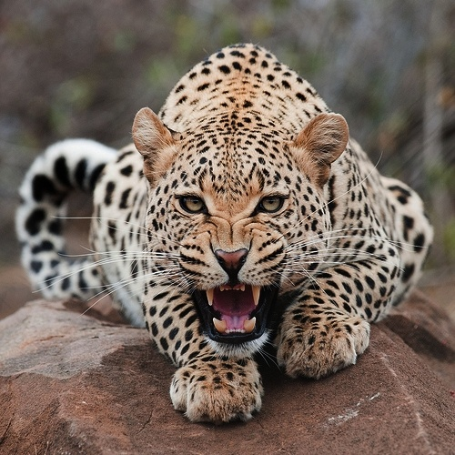

Гепард
Википедия | 18/03/2018
Гепард - (устар. охотничий леопард; лат. Acinonyx jubatus) — хищное млекопитающее семейства кошачьих, обитает в большинстве стран Африки, а также на Ближнем Востоке. Это единственный современный сохранившийся представитель рода Acinonyx. Быстрейший из всех наземных млекопитающих: за 3 секунды может развивать скорость до 110 км/ч. Согласно другим данным максимальная скорость гепардов достигает 93 км/ч.
Читать далееТигр
Википедия | 16/03/2018

Тигр(лат. Panthera tigris) — вид хищных млекопитающих семейства кошачьих, один из четырёх представителей рода пантера (лат. Panthera), который относится к подсемейству больших кошек. Слово «тигр» происходит от др.-греч. τίγρις, которое в свою очередь восходит к др.-перс. *tigri от корня «*taig» со значением «острый; быстрый»[2][3][4]. Среди представителей этого вида встречаются крупнейшие животные семейства кошачьих. Тигр является одним из крупнейших наземных хищников, уступая по массе лишь белому и бурому медведям. Выделено девять подвидов тигра, из которых к началу XXI века сохранились лишь шесть. Общая численность составляет порядка 4000 — 6500 особей[5], из них самым многочисленным является бенгальский тигр (номинативный подвид), составляющий 40 % от всей популяции. В XX веке внесён в Красную книгу МСОП, в Красную книгу России, а также в охранные документы других стран. По состоянию на 2019 год охота на тигров запрещена во всём мире.
Читать далееЛев
Википедия | 11/03/2018

Лев(лат. Panthera leo) — вид хищных млекопитающих, один из четырёх представителей рода пантер (Panthera), относящегося к подсемейству больших кошек (Pantherinae) в составе семейства кошачьих (Felidae). Наряду с тигром — самая крупная из ныне живущих кошек, масса некоторых самцов может достигать 250 кг[2]. Трудно сказать достоверно, массивнее ли крупнейшие подвиды льва, чем крупнейшие подвиды тигров. Связано это с тем, что исторические очень крупные веса амурских тигров в большинстве своём признаны недостаточно достоверными[3]. Достаточными данными о размерах и массе представителей крупнейших подвидов льва (например, барбарийском) наука не располагает. Что касается живущих в неволе животных, они часто являют собой смешение разных подвидов. Существует мнение, что львы в неволе несколько превышают тигров в размерах и массе[4], так же как и обратное ему.
Читать далее